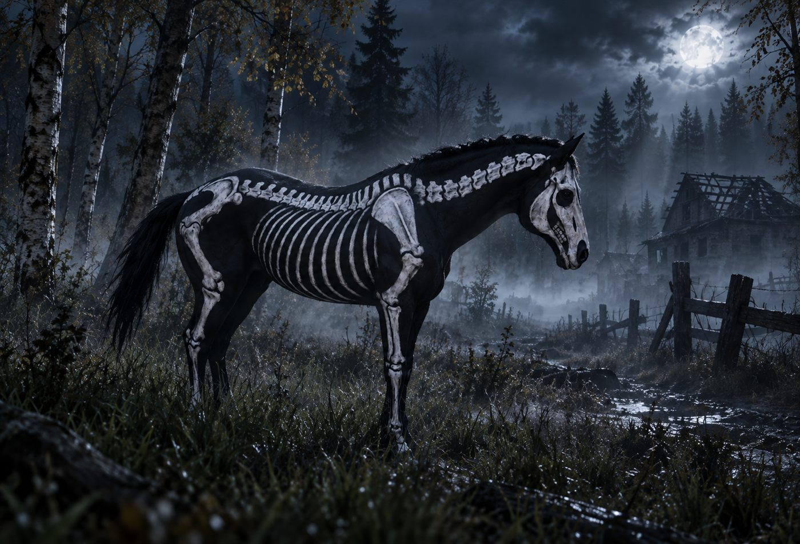

The Hollow Steed
Some legends refuse to stay buried.
You thought spooky season was over? We were just getting started.
Something wicked has been spotted roaming the wilds of Chernarus. A mysterious skeletal stallion, known only as The Hollow Steed, has emerged from the darkness.

A horse out of the dark
The wilderness has produced something no ordinary survivor would mistake for a normal mount.
This exclusive Beneath the Ashes horse wears a haunting black coat marked with white skeletal patterns. It is a truly unique addition to any survivor's collection, but it will not wait around for anyone who is still arguing with their map.
One week only
From November 1 through November 7, 2026, survivors can venture into the wilderness, track down the elusive creature and claim it for themselves.
Track the legend
There is no shortcut in the story. The hunt is the story.
The clock is moving
But time is running out. Once the event ends, this exclusive opportunity disappears back into the darkness.
Make the discovery
Venture into the wilds of Chernarus, keep your eyes open and find out whether you will be the survivor who discovers this bone-chilling beauty before it vanishes.
Some legends refuse to stay buried.
Will you be the survivor who finds The Hollow Steed before the week is over?
Available November 1–7 only. The wilderness is waiting.